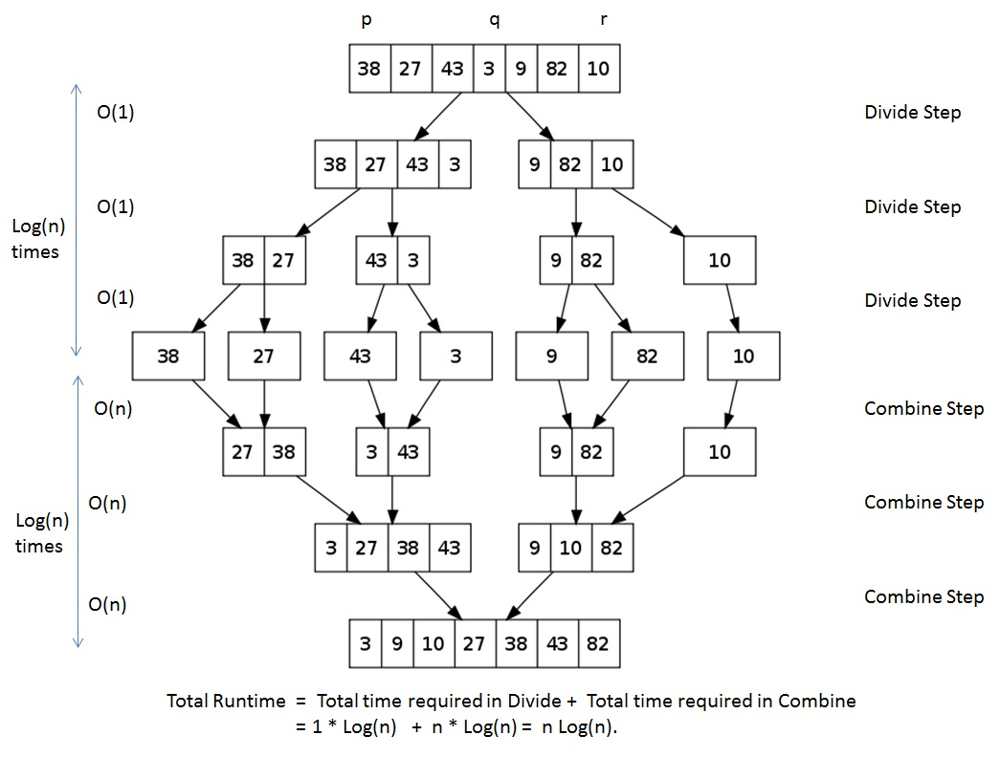

Merge sort uses what is known as a divide and conquer approach. This approach makes merge sorting more efficient than selection and insertion sorts.
Worst case occurs when the array starts out in reversed order (big to small). This takes maximum amount of comparisons
Best case is when the list is already sorted small to big. It only takes one comparison
the array is sorted after n-1 passes. Just like Selection sort
After the kth pass, elements at a[0] through a[k] are sorted with respect to each other.
tip: When we are dealing with a large n, insertion sorts are not efficient
Given that an array has more than 1 element, merge sort cuts the array into halves.
Then it sorts each half, hence "divide and conquer"
more like divide and sort. After the halves are sorted, we merge them
for a completely sorted array
Quick sort is a little tricky so here are some great visuals that break down the process 